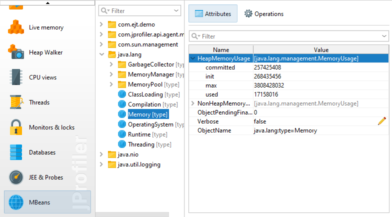
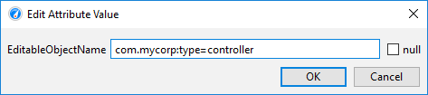
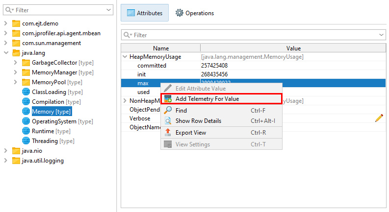
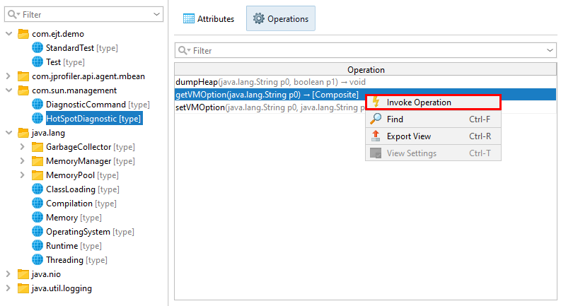
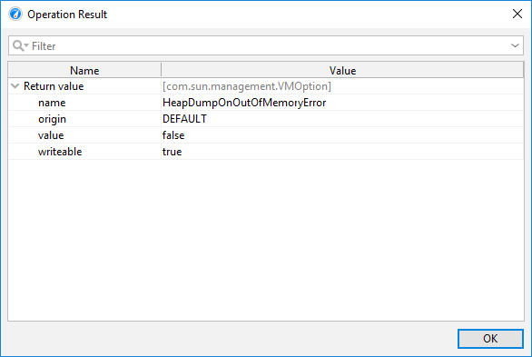
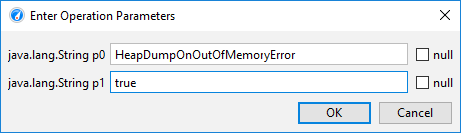

Many application servers and frameworks such as Apache Camel use JMX to expose a number of MBeans for configuration and monitoring purposes. The JVM itself also publishes a number of platform MXBeans that present interesting information around the low-level operations in the JVM.
JProfiler includes an MBean browser that shows all registered MBeans in the profiled VM. The remote management level of JMX for accessing MBean servers is not required, because the JProfiler agent is already running in-process and has access to all registered MBean servers.
JProfiler supports the type system of Open MBeans. Besides defining a number of simple types, Open MBeans can define complex data types that do not involve custom classes. Also, arrays and tables are available as data structures. With MXBeans, JMX offers an easy way to create Open MBeans automatically from Java classes. For example, the MBeans provided by the JVM are MXBeans.
While MBeans have no hierarchy, JProfiler organizes them into a tree by taking the object domain name up to the
first colon as the first tree level and using all properties as recursively nested levels. The property value
is shown first with the property key in brackets at the end. The type property is prioritized
to appear right below the top-level node.
At the top level of the tree table showing the MBean content, you see the MBean attributes.

The following data structures are shown as nested rows:
Arrays
Elements of primitive arrays and object arrays are shown in nested rows with the index as the key name.Composite data
All items in a composite data type are shown as nested rows. Each item can be an arbitrary type, so nesting can continue to an arbitrary depth.Tabular data
Most frequently you will encounter tabular data in MXBeans where instances ofjava.util.Map are
mapped to a tabular data type with one key column and one value column. If the type of the key is a simple type,
the map is shown "inline", and each key-value pair is shown as a nested row. If the key has a complex type,
a level of "map entry" elements with nested key and value entries is inserted. This is also the case for the
general tabular type with composite keys and multiple values.
Optionally, MBean attributes can be editable in which case an edit icon will be displayed next to their value and the Edit Value action becomes active. Composite and tabular types cannot be edited in the MBean browser, but arrays or simple types are editable.
If a value is nullable, such as an array, the editor has a check box to choose the null state.

Array elements are separated by semicolons. One trailing semicolon can be ignored, so
1 and 1; are equivalent. A missing value before a semicolon will be treated as a null
value for object arrays. For string arrays, you can create empty elements with double quotes ("") and elements
that contain semicolons by quoting the entire element. Double quotes in string elements must be doubled.
For example, entering a string array value of
"Test";"";;"embedded "" quote";"A;B";;
creates the string array
new String[] {"Test", "", null, "embedded \" quote", "A;B", null}JProfiler can create custom telemetries from numeric MBean attribute values. When you define an MBean telemetry line for a custom telemetry, an MBean attribute browser will be shown that lets you choose an attribute that provides the telemetry data. When you are already working in the MBean Browser, the Add Telemetry For Value action in the context menu provides a convenient way to create a new custom telemetry.

A telemetry can also track nested values in composite data or tabular data with simple keys and single values. When you chose the nested row, a value path is built where path components are separated by forward slashes.
In addition to inspecting and modifying MBean attributes, you can invoke MBean operations and check their return values. MBean operations are methods on the MBean interface that are not setters or getters.

The return value of an operation may have a composite, tabular or array type, so a new window with a content similar to the MBean attribute tree table is shown. For a simple return type, there is only one row named "Return value". For other types, the "Return value" is the root element into which the result is added.

MBean operations can have one or more arguments. When you enter them, the same rules and restrictions apply as when editing an MBean attribute.
